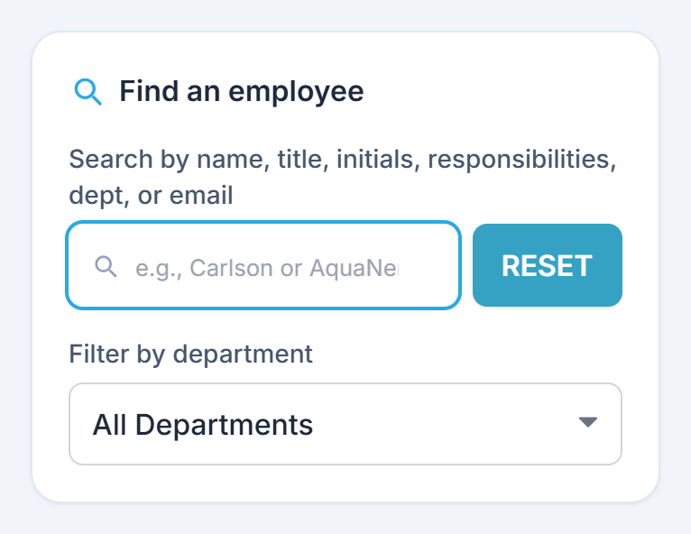
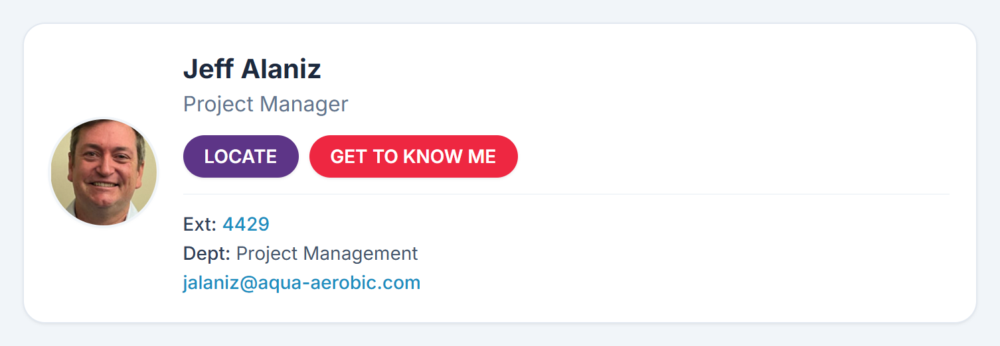

📍 How to Find an Employee
Use the search and filter tools on the left of the app to find employees.

1. Use the Search Bar
Type directly into the search bar to find employees by:
- Name (e.g., "John Davis")
- Job Title (e.g., "Engineer")
- Initials
- Email Address
- Department Name
- Responsibilities (e.g., "AquaNereda")
2. Filter by Department
Use the department dropdown to select a specific department and instantly narrow the list.
3. Reset Your Search
Click the RESET button at any time to clear your search terms and filters, showing all employees again.
📇 Understanding the Results
Matching employees appear on the right side as "cards." Each card provides a quick overview — the employee's photo, name, title, extension, department, email, and key responsibilities.
✨ New Feature: Webex Calling
You can now click an employee's 4-digit extension number (e.g., Ext: 1234) directly on their card to start a Webex call.
Visit the Set Up Webex Calling guide to learn how to use this feature.

🎬 How-To Video
Watch this short video for a complete walkthrough of all AQUALocator features.